The hunter stalked his preythrough the awakening forest. As the early rays of the sun filtered through the branches overhead, he moved noiselessly from tree to tree. Finally halting, he quickly but carefully fitted an arrow to his bowstring, aimed and let, fly. This time he hit his mark; he was glad, because he had not eaten since the previous day. He walked to where his arrow had fallen, carefully removed the chocolate-covered jelly doughnut, and walked away.
Jonathan V. Wright, M.D.
The above fanciful passage from Dr. Wright's Book of Nutritional Therapy (Rodale, 1979) makes the point that, though our bodies and their nutritional requirements haven't changed all that much from the time when we were hunter-gatherers, our eating habits have changed dramatically and recently. The refined foods that most of us subsist on have been around for barely 100 years. That means gardeners don't have to reach so very far back to create a diet superior to that of the average American. Even the act of growing your food provides an essential vitamin - D, from sunshine. And a person can grow enough food to supply the rest of his or her complete nutritional needs for one year in a space of only 1,000 square feet. Yet few of us put any real thought into the nutritional values of the crops we grow. If we did, I imagine we'd be surprised by our discoveries. Indeed, the crops that rate as nutritional "superstars" aren't even raised by most gardeners. To help you boost the health-promoting power of your garden, we've assembled cultivation information on ten of the all-around most healthful plants you can grow.
If you read through the vitamin and mineral chart, you'll see that sunflower seeds are a nutritional powerhouse. They are amazingly health-promoting, but there's a hitch: The nutritious nuggets are packaged quite well. Some folks dehull their seeds by putting them in a blender with water (the chopped hulls float, while the heavier seeds sink) ...by rubbing them across a screen box made of hardware cloth... by running them through a hand mill ...or by just plain shelling them by hand. In truth, there is no easy way in; build a better home-scale sunflower seed huller and the world will beat a path to your door. Some sources will tell you to plant sunflower seeds in warm weather, but I've seen magnificent volunteers pop up when I was still in long johns. You might try sowing both early and late in the season. Full sun is a sunflower's delight, as is adequately drained soil... though the crop will tolerate less than ideal conditions. With little other care, the golden monarchs will reward you with a burst of colorful bloom and then later with large seed heads. (You may want to tie some sort of netting loosely over these to keep birds from eating your crop.) Sunflowers are a Native American crop - one that was used extensively by the Indians. And based on their food and flavor value, they're still heroes in their own country. Mammoth Russian and Giant Single sunflowers both have particularly high protein contents.
The ancient Hunzas and Chinese knew something most of us don't; millet was one of the first grains to be domesticated. And with good reason: Millet contains more of the essential amino acids - and is more easily digested - than wheat, rye, oats, rice or barley. Yet the only time most Americans use millet is to feed caged birds! It's also widely used as a livestock feed (I bought the seed I planted from a local feed-and-seed store). Millet is becoming more popular as food for humans, though, and can now be purchased at food co-ops, health food stores and even some chain groceries. Proso, or broomcorn millet, and pearl millet (which is said to be easy to thresh) are the varieties most used for human consumption. Pearl millet has long, compact seed heads - the plants look a lot like cattails-and has been grown as emergency forage on many a farm when fall was approaching and a quick crop was needed. (Millet will yield good livestock forage in as little as one month.) While millet grows best in fertile ground, it's known for its hardiness in poor soils and under dry conditions. It's also quite disease- and pest-resistant. It can be sowed any time from spring to early fall, depending on the climate. You can broadcast seed onto prepared ground and chop it in about one to three inches deep with a heavy metal rake. Or, in a small garden, you can plant it closely in rows. Harvest the seed heads about three months after sowing. Be sure to get them before they're fully ripe, or foraging birds will leave you nary a one. Tie the heads together and hang them upside down in a dry place - inside a bag or else loose if your storage area is free from mice. (Does such a place exist?) You can grind the seeds finely, hull and all, or flail or winnow them as our forebears did. My main uses for millet have been as a breakfast cereal, mixed with rice in stir-fried dishes and as an extender in bread and fish loaves. There's no shortage of good recipes for this grain in health-oriented and international cookbooks. (And any you don't eat makes great hay or hen feed.) So if you want to take one more step toward nutritional self-sufficiency, try a home plot of millet.
I saw my first sesame plant at the Blue Ridge Institute's Farm Museum in Ferrum, Virginia, and was intrigued even then. But after doing research for this article and discovering sesame's high percentage of niacin, riboflavin, thiamine, vitamin E, calcium, iron, manganese, phosphorus and protein, I decided to grow some myself.
Sesame was smuggled into this country by African Americans, who called it benne. It's the basis for the popular Middle Eastern sauce and condiment tahini - which has helped people realize sesame can be used for more than a topping on hamburger buns. Seeds can also be added to cake. cookie and bread recipes to boost their nutritional quality. And there's an old tradition of making benne cakes and candy, with sesame as the principal ingredient. A tender annual, benne requires 70 to 110 days of full sunshine, and good spacing (at least 12 inches) between plants for aeration. The long taproot makes it sensitive to transplanting but also serves as its hedge against drought. In midsummer; the three-foot-tall plants form attractive purple-white flowers... which eventually become small hairy pods loaded with seed. The pods' tendency to ripen unevenly and propel their seed in bursts makes this crop a misfit in the world of industrial agriculture, but a fine orphan child for the home gardener.
Stamp collecting is fun, but bean collecting is fun, tasty and nutritious. I'll admit I've been bitten by the bean-collecting bug. How can anyone ignore a crop that's easy to grow, harvest and store, fun to thresh, a nitrogen-fixer and a great source of low-fat protein? Snap and shell beans will dry if you let them, but there are dozens of specific dried bean cultivars. Colors and patterns abound. Names, too: Although most everyone knows about navy, pinto, black, kidney and Great Northern beans, how many people have heard of Lazy Wife, Gramma Walters, Montezuma Red and Mortgage Lifter? You can grow bush or pole varieties of many dried beans. The bush kind take less work, but some folks swear the poles have more flavor. Except for favas, all beans love warm weather. You can also inoculate the seeds with rhizobium bacteria to help the root nodules fix nitrogen in your soil. Pre-soaking the seeds will sometimes cause them to split, so I give them a head start by rolling them up in damp cloths or paper towels that are then stored in plastic bags. When the root tip (or radical) starts to protrude, plant them tip down one to two inches under the soil, depending on the va riety's seed size. Keep an eye out for Mexican bean beetles - you can squash or handpick the bugs, eggs and larvae. Better yet, interplant the beans with pota toes; the two companions tend to repel each other's pests. For best results, the plants should be kept generally free from weeds and well-watered. Still, we've suc cessfully grown several kinds of dried beans in a field that received no irriga tion and little cultivation. Their hardiness is impressive. As fall wears on, your beans will dry as they stand - branch, leaf and pod. When your other harvest chores slow a bit, pull the bean plants up and hang them to dry further. There are various home-scale methods of threshing them (separating the beans from their pods); we've put them in a sack and shuffled and clogged all over them! You can freeze the beans for a few days to kill weevils and their eggs. Then dry them some more until you can't dent them with your teeth. That's it. Store them in a lidded glass jar and the colorful seeds will add to your kitchen as well as to your diet.
Sunflowers have uses other than nutritional. A more beautiful windbreak couldn't be built. Planted thickly, sunflowers can provide a wind-pollination barricade between crops. The leaves can be used as cattle feed and the dried stems as cord fiber, kindling, or support poles for next year's peas. The heads make lovely table centerpieces and good squirrel feeders, and - of course - serve as a very effective way to lure birds to the garden.
Of course, soybeans are the nutritional king of the dried beans-high in protein, calcium and vitamins. We discuss their cultivation elsewhere in this issue (see " The Most Important Food in the World ").
Native to Peru, these nutritional legumes are used to climates with 120 days of frost-free, sunny weather. Now, many of you will read that sentence and want to skip over to the next crop, but wait: There are peanut varieties that do well even in Canada! How so? Because while the nuts need warm soil for germination, the plants can survive light spring and fall frosts without suffering harm. Any peanuts you plant must be raw, with the skin around each seed still intact. You can plant them in or out of the shell. Since soaking them overnight in warm water helps them get off to a quicker start, "shell planters" may want to crack those coverings a bit and then soak their nuts, shell and all. If you live in a warm area, you can sow your crop directly into the garden after your last spring frost date. Folks in cooler climes can try starting peanuts indoors four to six weeks earlier. Use large pots - say, old paper milk cartons for this; the roots don't like to be disturbed. And space your plants about 18 inches apart. After the plants flower, they'll produce pegs that grow down into the soil and then form the goobers. So be sure to raise your crop in loose soil. (Peanuts don't, however, need a lot of extra soil nutrients.) You can even hill up the soil some around the plants to help the runners meet the ground that much sooner.
About 60 to 80 days after the pegs submerge, start checking your hidden nuts. When ripe, they should be deep pink - not pale pink or milky - with well-indented hulls. The plant leaves themselves will start to pale as the crop matures. It's a rare crop that grows up out of the ground only to return to it. Why not match peanuts' novel perseverance yourself? Give goober raising a try!
Almost all the dark green leafy vegetables (DGLVs) are nutrient-rich. However, spinach, beet greens and Swiss chard are also high in oxalic acid, which inhibits the body's full use of their calcium. For that reason, I'm going to bounce them from the "nutritional superstar" category and focus on four other - perhaps less appreciated - DGLVs: turnip greens, broccoli leaves, kale and parsley.
If you've been har vesting turnip roots and composting the tops, you've been throwing good nutrition away: the leaves are rich in vitamins A, C and calcium. Raising turnips (beets, too) is growing two crops in one.
I broadcast seed onto a prepared bed, being careful not to oversow. As leaves first appear, I thin them for use in salads, soups and stews. When the roots start crowding, I pull whole plants, often feeding the small globes to rabbits or chickens. Soon the remaining plants stretch their stems and the leaves get to be about six inches across. Then it's a snap to pick enough outer fronds for a meal, while leaving plenty of foliage to feed the plant roots. What could be easier?
Seems like most everybody knows how to grow broccoli, but few people realize that, like turnips, it's a multiple-use crop. Peeled and chopped stems are excellent stir-fried, and the leaves, make perfectly good cooked greens. Those fronds contain 16,000 IU (international units) of vitamin A per cup (three times the RDA). In fact, they're better for you than the plant heads are!
There's certainly more justification for the space broccoli takes in your garden if you use all its parts.
Kale's attractive greenery packs over ten times the vitamin A as the same amount of iceberg lettuce, has more vitamin C per weight than orange juice, and provides more calcium than equivalent amounts of cow's milk. It can be grown from Florida to Alaska with very little effort-it seems to thrive on neglect.
Like most members of the brassica family, kale is descended from sea cab bage, from whence it got those waxy, moisture-conserving leaves. It's a biennial, storing food the first year to help it produce the next year's seeds (that's why those first year leaves are so nutritious). And it's quite frost-hardy, lasting through winter in many locations - even under snow - to produce a second growth come spring.
To plant kale, prepare your soil, broadcast the seed and chop it in with a heavy metal garden rake. If conditions are particularly dry, you might sprinkle a thin layer of straw on top to conserve moisture. Kale grows best when mixed with organic matter and perhaps some lime in the soil. Plants thrive when thinned to about six inches apart and exposed to cool temperatures.
Young tender leaves are a delicacy. I chop them raw in salads or steam them as greens. But they achieve their peak flavor after the first frost. The clas sic Southern way to serve cooked greens is with chopped onions and a bit of vinegar, a sour-sounding but surprisingly sweet-tasting combination. The widely available Blue Scotch variety is high in vitamin A.
That curled decoration on your dinner plate is actually one of the meal's most nutritious ingredients. If you're smart enough to eat those two sprigs of garnish, you'll be getting your RDA of both vitamins A and C.
While parsley can be started indoors, I start mine in April by soaking the seeds overnight in warm water (this slow-starting crop needs all the germinating help it can get!), sowing them directly onto a prepared bed and then sifting a fine layer of good soil over the top. A light covering of straw helps keep the soil moist during that long wait for germination. As the season winds on, that skimpy stand of wispy seedlings becomes a thick patch of deep green beauty. Parsley loves sunshine, but if you're in a climate with intense summer heat, you should grow it under the shade of some taller plants to help it retain moisture. The mature sprigs are quite cold-hardy and - along with sprouts - will bring life and greens to your winter kitchen.
So there you have ten health-giving heroes of the garden. Some are a bit exotic; and others have probably already been growing, unappreciated, right under your nose. All can help to make vegetable gardening better for you than it's ever been before.
|
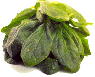 |
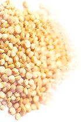 |
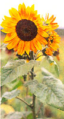 |
|
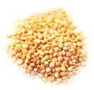 |
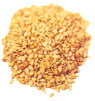 |
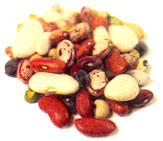 |
|
|
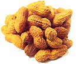 |
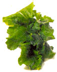 |
|
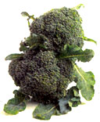 |
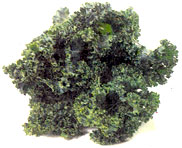 |
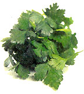 |